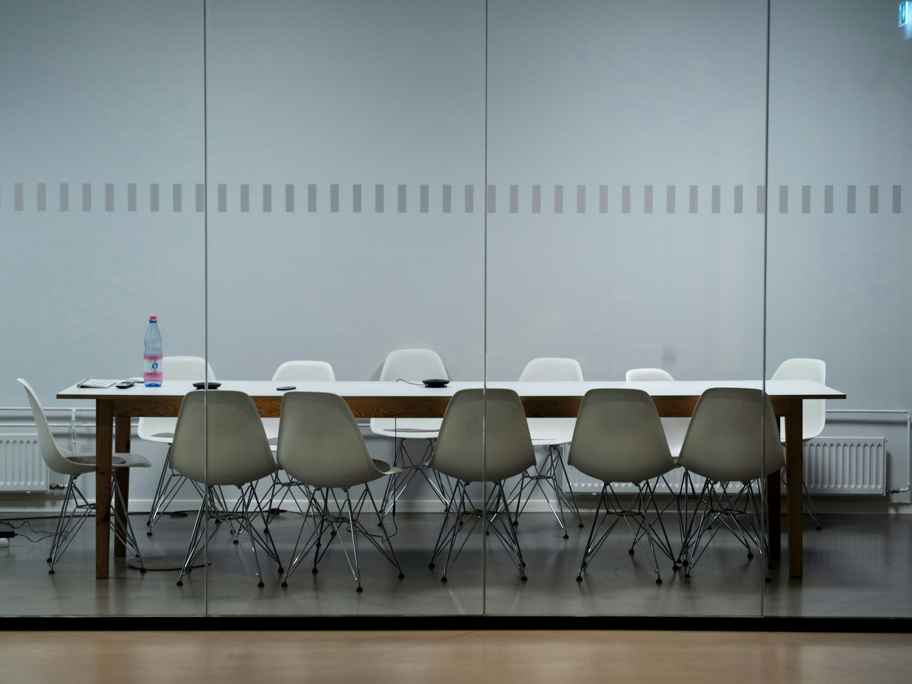
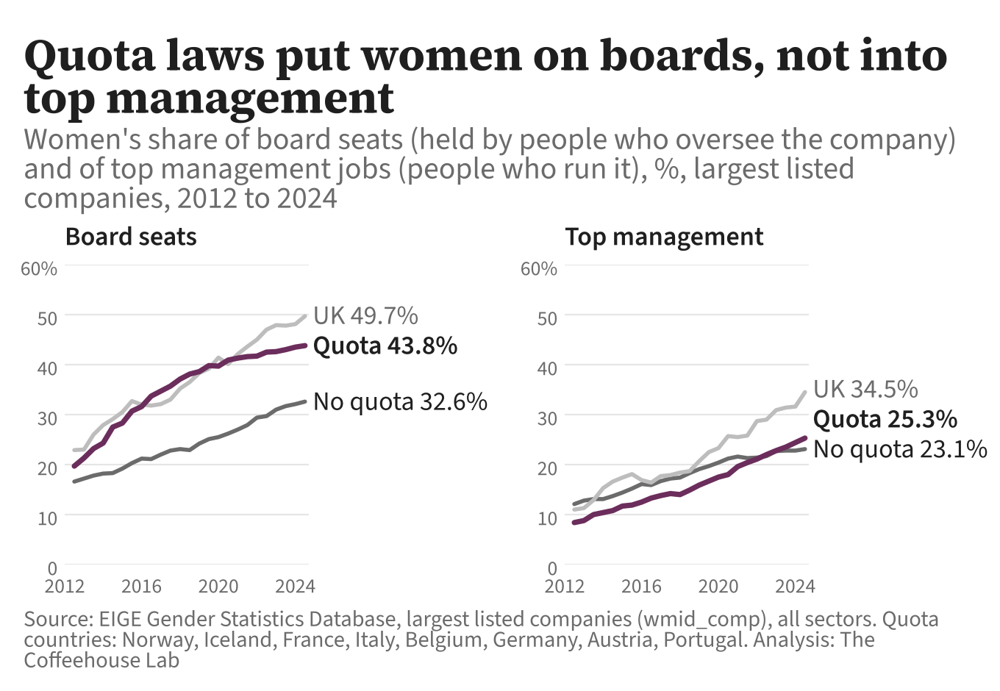
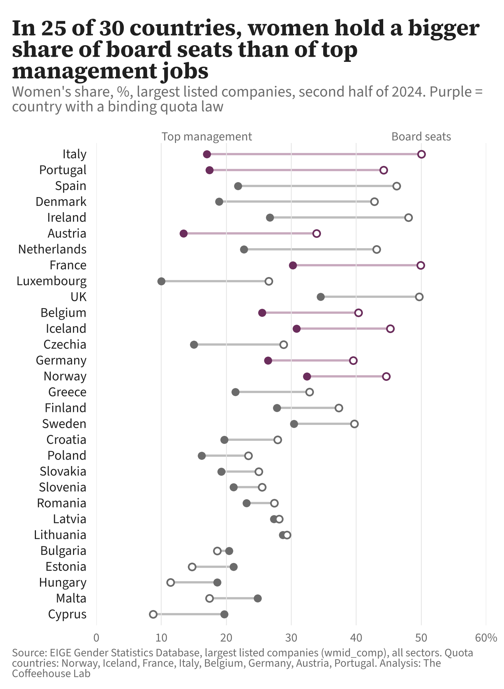
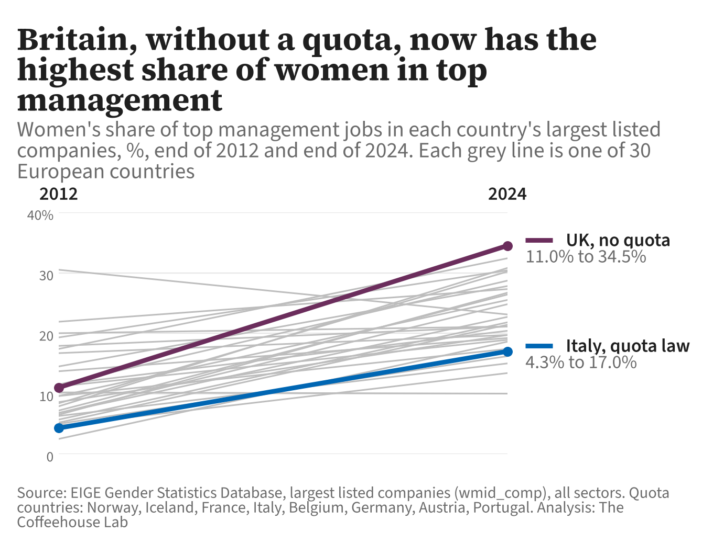
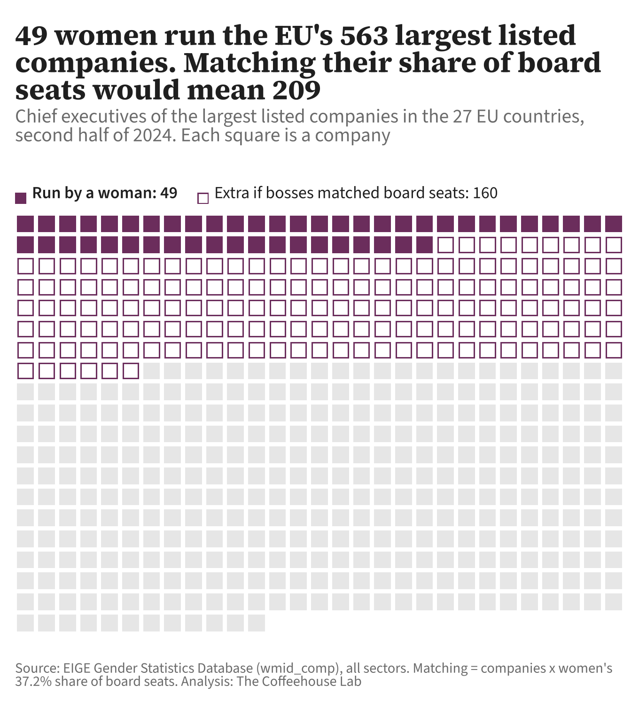

Photo: Pawel Chu on Unsplash
Women got the board seats. They still don’t get the top job
In 2011 France and Italy passed laws to put women on company boards. Britain set voluntary targets instead. Both routes put more women on boards. Neither put many women in charge of the companies.
In 2011 three of Europe’s biggest economies decided, within six months of each other, that too few women sat on the boards of their largest companies. They chose different ways to fix it.
In January, France passed the Copé-Zimmermann law: boards of large listed companies had to be 40% women by 2017. Appointments that broke the rule would be void, and directors’ fees suspended. In July, Italy passed the Golfo-Mosca law, requiring one-third women, with fines and, in the end, the removal of boards that did not comply.
In February, Lord Davies reported to the UK government. Women held 12.5% of all seats on FTSE 100 boards, up from 9.4% in 2004. He recommended a target of 25% by 2015, but argued that no law was needed. Business would be asked, not told.
It was close to a natural experiment: the same problem, the same year, but two very different approaches.
Did board seats lead to management jobs?
The case for quotas was never only about the board. It was that women on boards would pull other women up: into the management team, the finance director’s office, and eventually the chief executive’s job.
So the question becomes: did putting women on boards get women into the jobs that run the company? And did it matter whether a law did it or a target?
The European Institute for Gender Equality (EIGE) counts the women and men in each of these jobs in the largest listed companies of every European country, twice a year, using the same definitions everywhere. The UK stays in the figures until the end of 2024, after Brexit, so it can be compared like for like at least until then.

Boards changed. Management barely did
In the eight European countries with binding quota laws, women held 25.3% of top management jobs at the end of 2024. In the rest of Europe, with no quota, they held 23.1%. Thirteen years of law, and a gap of two points.
The number to take away
2 points
The difference in women’s share of top management jobs between countries with quota laws (25.3%) and countries without (23.1%), end of 2024.
Source: EIGE Gender Statistics Database, largest listed companies. Recomputed from the raw headcounts.
Board seats tell a different story. In the quota countries women held 43.8% of board seats, against 32.6% elsewhere. Part of that gap is geography: in western and northern Europe, where no quota applies, women hold 41.1% of board seats, close to the quota countries’ figure. The laws did exactly what they said: they filled the seats they named.
And among chief executives the gap disappears. Women ran 19 of the 211 largest companies in the quota countries (9.0%) and 38 of the 398 elsewhere (9.5%).
To be fair to the data, quota countries did start further behind. Their share of women in top management rose by 17 points from 2012, against 11 points elsewhere, so some, albeit limited, catching up happened. But inside the quota countries the gap between women’s share of board seats and their share of top management widened, from 11 points in 2012 to 18 points in 2024.
Photo: Daniel on Unsplash
Italy
Women hold half of the board seats in Italy’s largest companies (50.0%). They hold 17.0% of top management jobs, and run one of the 35 companies.

The City of London. Photo: Robert Bye on Unsplash
Britain, with no law
The country that refused a quota ended up with the highest share of women in top management in Europe. At the end of 2024 women held 34.5% of top management jobs in the UK’s largest listed companies, more than in any of the 30 European countries EIGE covers.
In 2012 it was 11.0%. No country’s share rose further.
Britain also matched the quota countries on board seats: women held 49.7%, about the same as France (49.9%) and Italy (50.0%).
One difference stands out. From 2016, the UK’s voluntary targets went beyond the board. The Hampton-Alexander Review asked FTSE 100 firms for 33% women in their top management teams, and among the managers reporting to them, by 2020. The FTSE Women Leaders Review raised that to 40% of senior leadership by 2025, and asked every FTSE 350 company for at least one woman in one of four key roles: chair, senior independent director, chief executive or finance director. Quota laws, by contrast, named only the board.

The British record is not clean, however. A UK board also has a few seats for the company’s own senior managers, such as the chief executive and the finance director. Women hold just 15.4% of those seats in the FTSE 350, against 49.5% of the other board seats, and 8% of chief executive jobs (FTSE Women Leaders Review, February 2026). Britain’s women managers are mostly in the management team below the board, not yet in the few management seats on it.
160 missing women chief executives
At the end of 2024, 49 of the EU’s 563 largest listed companies were run by a woman. If women ran companies in the same proportion as they hold board seats (37.2%), the number would be about 209. That is 160 companies, in the EU’s own main stock market indices, where women have reached the board but not the chief executive’s job.

In the UK the same sum gives 7 women chief executives among 48 companies, against 24 if chief executives matched women’s share of board seats.
The EU has now taken the quota route Union-wide. Its 2022 directive required listed companies to reach 40% women in board seats, or 33% across the whole board, by June 2026. It names the board again, not top management.
What this means
- A quota buys the seats it names, and little beyond them. Laws aimed at boards filled board seats. Top management in quota countries now looks much like top management in countries without a law. Policy aimed at who runs companies has to name those jobs.
- Targets that reach below the board are the thing to watch. The UK set voluntary goals for top management teams and the managers reporting to them, and its share of women in top management rose more than anywhere else in Europe. That is a link, not proof: UK firms differ in other ways, and Ireland, also without a quota, rose fast too.
- The next test is already running. The EU directive repeats the board-only design across 27 countries. If this pattern holds, it will put more women on boards in the countries that lag, and leave women running fewer than one company in ten.
- What the data can’t tell us. Whether quotas caused anything, or whether the countries that adopted them were different to begin with. EIGE covers about 50 companies per country at most, so a single new chief executive can swing the percentages. The UK leaves the figures after 2024.
Sources
- European Institute for Gender Equality, Gender Statistics Database: largest listed companies (wmid_comp).
- FTSE Women Leaders Review, February 2026 report.
- Hampton-Alexander Review, reports 2016 to 2021.
- Lord Davies, Women on Boards, February 2011.
- Directive (EU) 2022/2381 on gender balance among directors of listed companies.
Photos
- Empty meeting room: Pawel Chu on Unsplash.
- Market screen in Italian: Daniel on Unsplash.
- City of London: Robert Bye on Unsplash.
Charts made for The Coffeehouse Lab.